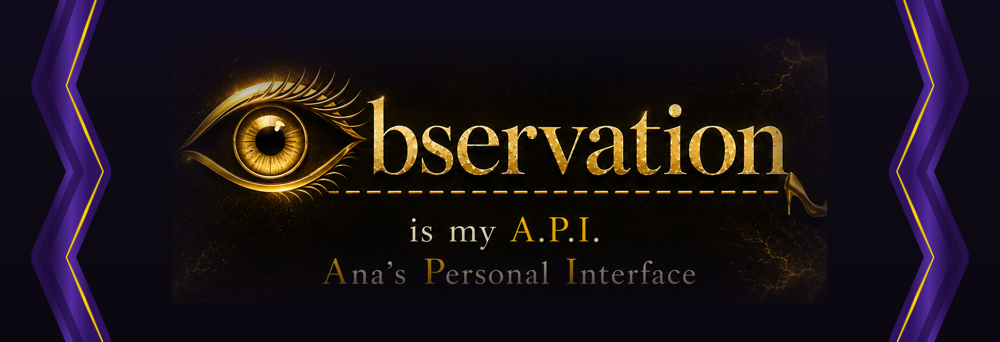

QA Engineer who notices what others miss. Open to opportunities worldwide.
In software systems, an API is an interface — a way to communicate with a system and understand how it behaves. In my testing work, observation becomes that interface.
Before writing a bug report, I watch how a system behaves under real user interaction — the small details, the moments when expected and actual behavior begin to diverge.
Testing is not only verification. It is exploration. I'm drawn to exploratory approaches and the tour-based ideas of James Whittaker.
Real-world testing across mobile, web, and API domains.
6-month intensive UAT internship on a React Native iOS/Android app. 328 test scenarios across 13 modules. Managed defect lifecycle in Jira — root cause analysis, severity classification, fix verification. Notable: flight notification timing hypothesis discovered through real flight data analysis across two routes.
Independent exploratory testing on a live insurance platform. Found 5 bugs including 2 security-level issues: autofill returns a stranger's personal data, and an invalid citizenship/document combination is accepted without validation.
Pro bono UAT for an NGO donation platform. Risk-based approach prioritizing authentication and payment flows. Found 14 issues across Critical, High, and Medium severity — including a payment false error where WordPress backend reports failure despite a successful Visa/Google Pay transaction. Documented with screen recording.
Bugs logged across UAT internship, independent testing, and pro bono work.
Java · Selenium · TestNG · Maven — Quality Academy, Mar–Jul 2026.
Structured API testing practice using the Simple Grocery Store API. Started March 8, 2026.
Day-by-day structured learning diary.
Tools and methodologies used across projects.